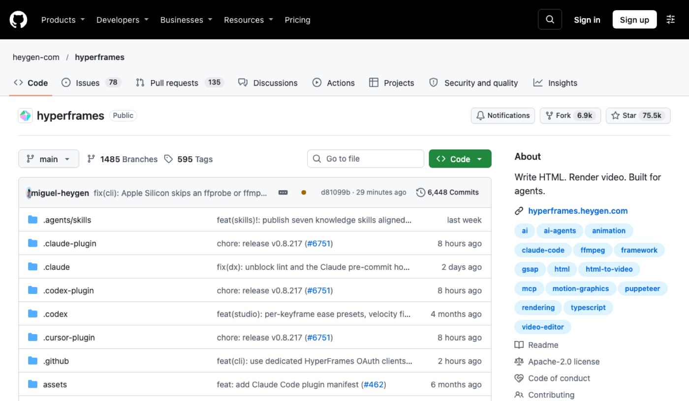
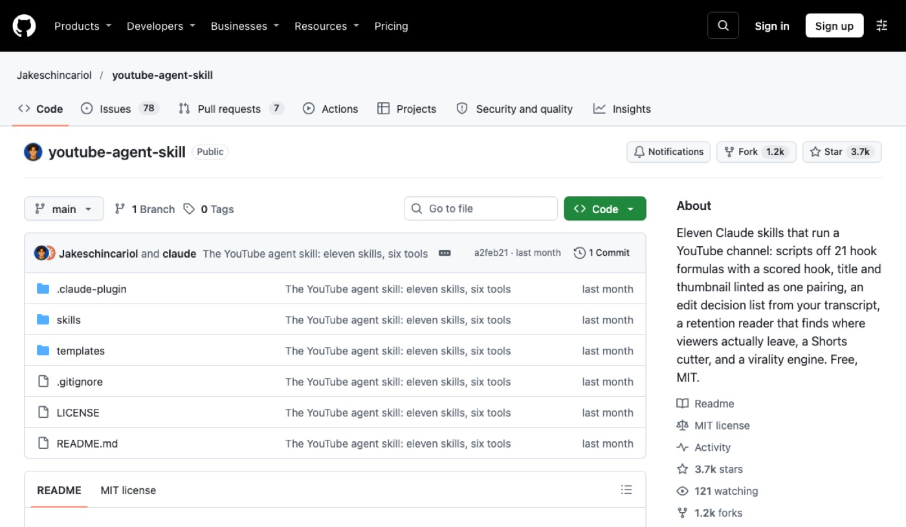
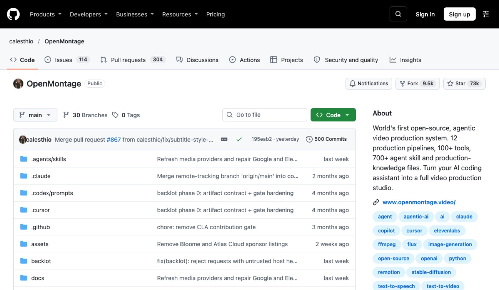

1. 시작 전 준비
- 터미널 실행 환경과 필수 개발 패키지를 설치하세요.
- 사용하려는 AI 코딩 에이전트에 스킬과 플러그인을 등록하세요.
- 영상 기획 방향과 다룰 주제를 미리 정리하세요.
1단계2. HyperFrames (하이퍼프레임즈)
웹 기술로 모션 그래픽 영상을 만들려는 창작자가 써요.
HTML과 CSS 코드를 MP4 비디오로 렌더링해 줘요. AI 에이전트와 연동해 영상 요소를 만들어요.

공식 사이트 — github.com/heygen-com/hyperframes 첫 화면
설치 없이 웹에서 써요 — github.com/heygen-com/hyperframes ↗
쓰는 순서
- npx hyperframes init 명령어로 프로젝트를 생성하세요.
- npx hyperframes preview 명령어로 브라우저에서 확인하세요.
- npx hyperframes render 명령어로 MP4 영상을 완성하세요.
바로 쓰는 요청문
10초 길이의 제품 소개 영상을 페이드인 타이틀과 함께 만들어 주세요.
배경 음악과 자막이 들어간 숏폼 비디오 레이아웃을 코드로 짜 주세요.
데이터 수치를 보여주는 차트 애니메이션 화면을 HTML로 구성해 주세요.
깐다고 영상이 바로 나오진 않아요. 설정을 익히는 시간이 들고, 윈도우 WSL2에서는 그래픽카드를 못 써 렌더가 느려요.
2단계3. youtube-agent-skill (유튜브 에이전트 스킬)
유튜브 대본과 채널 기획을 체계화하려는 운영자가 써요.
대본 작성부터 훅 점수 측정과 시청 지속 시간 분석을 도와줘요. 제목과 썸네일 조합을 검사하고 쇼츠 구간도 찾아줘요.

공식 사이트 — github.com/Jakeschincariol/youtube-agent-skill 첫 화면
설치 없이 웹에서 써요 — github.com/Jakeschincariol/youtube-agent-skill ↗
쓰는 순서
- 저장소를 복제하거나 Claude 플러그인으로 설치하세요.
- templates/voice.md 파일을 작성해 내 목소리 톤을 등록하세요.
- /yt-script 같은 명령어로 대본과 기획 검증을 진행하세요.
바로 쓰는 요청문
/yt-script [주제]에 대해 훅 점수가 높은 유튜브 롱폼 대본을 써 주세요.
/yt-package 제목 [영상제목]과 썸네일 문구 [문구]의 중복을 검사해 주세요.
/yt-retention retention.csv 파일을 분석해서 이탈 원인을 짚어 주세요.
자동으로 영상을 올려 주지 않으니 직접 검토하고 올려야 해요.
3단계4. OpenMontage (오픈몽타주)
기획부터 최종 영상 합성까지 에이전트에 맡기려는 제작자가 써요.
자연어 지시로 조사와 대본 작성 및 영상 조립을 진행해요. 여러 제작 파이프라인과 승인 검증 시스템을 제공해요.

공식 사이트 — github.com/calesthio/OpenMontage 첫 화면
설치 없이 웹에서 써요 — github.com/calesthio/OpenMontage ↗
쓰는 순서
- 저장소를 내려받고 make setup 명령어로 의존성을 설치하세요.
- AI 코딩 어시스턴트에서 프로젝트를 열고 만들 영상을 지시하세요.
- Backlot 화면에서 씬과 에셋을 확인하고 생성을 승인하세요.
바로 쓰는 요청문
[주제]에 대해 60초 분량의 설명 영상을 자막과 함께 제작해 주세요.
[유튜브 URL] 영상을 레퍼런스로 분석해서 새로운 기획안을 짜 주세요.
실제 촬영 영상만 사용해서 차분한 분위기의 75초 몽타주를 만들어 주세요.
외부 모델 호출에 따른 제작 비용이 들 수 있으니 미리 확인하세요.
5. 이어 쓰기 루틴
하나씩 따로 쓰기보다 이렇게 이어 쓰면 편해요.
| 영상 주제를 발굴할 때 | youtube-agent-skill로 시장을 분석하고 훅을 점검해요. |
| 대본과 화면을 구성할 때 | OpenMontage로 레퍼런스를 분석하고 장면을 짜요. |
| 코드 기반 그래픽이 필요할 때 | HyperFrames로 텍스트와 모션 요소를 렌더링해요. |
| 영상을 편집하고 완성할 때 | Backlot 승인 단계를 거쳐 최종 비디오를 뽑아내요. |
| 채널에 영상을 올린 뒤 | youtube-agent-skill로 시청자 이탈 지점을 복기해요. |
6. 자주 묻는 질문
명령어만 넣으면 유튜브 채널에 영상이 알아서 올라가나요?
도구들은 제작과 기획을 도울 뿐 자동 업로드는 지원하지 않아요. 완성된 결과물을 직접 확인하고 유튜브 스튜디오에 올려야 해요.
코딩을 전혀 모르는 초보자도 바로 쓸 수 있나요?
Node.js나 Python 같은 기본 설치 과정을 거쳐야 해요. AI 코딩 에이전트 사용법을 먼저 익힌 뒤 다루시는 것을 권해요.
도구를 설치했는데 실행 시 오류가 나면 어떻게 하나요?
FFmpeg 프로그램이 컴퓨터에 제대로 설치되어 있는지 먼저 확인하세요. 도구별 필수 환경 요구사항은 각 공식 문서에서 확인하세요.
완성된 영상의 품질이 기대보다 낮은 이유는 무엇인가요?
도구가 모든 기획을 알아서 창작해 주지는 못해요. 내 채널의 말투 파일이나 세부 지시문을 구체적으로 보완해 보세요.
7. 공식 링크
이 자료가 도움이 됐다면
매주 새 도구를 영상으로 고르고, 따라 하는 법은 여기에 쌓아요.